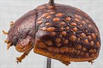
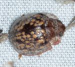
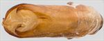
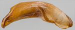
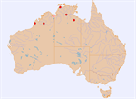

Click on images to enlarge
{kind=link}

Male, Mataranka, Northern Territory
![Live Adult, Kununurra, N.W. Western Australia [iNaturalist, Daniel Meier]](assets/image/Ta134/Ta134_iN305741073.jpg){kind=link}

Live Adult, Kununurra, N.W. Western Australia [iNaturalist, Daniel Meier]
{kind=link}

Aedeagus, dorsal view (Mataranka, Northern Territory)
{kind=link}

Aedeagus, lateral view (Mataranka, Northern Territory)
{kind=link}

Distribution
Name
Trachymela vomica (Blackburn)
Reference specimen
PGK/0333, Mataranka, Northern Territory
Adult Description
Length: ♀ 9.3-10.2 mm [3], ♂ 7.3-8.9 mm [6].
Colour: head: uniformly mid- to dark-brown with black-tipped mandibles, rarely with slightly darker areas bordering the sutures; antennomeres 1-11 uniformly straw- to light-brown, distal antennomeres sometimes with vaguely darker infuscation; pronotum: brown, same shade as head, area behind eyes sometimes fractionally darker, with this dark colouring sometimes extending onto disc; scutellum: uniformly brown, similar or fractionally darker than adjacent area of pronotum; elytra: brown, similar or slightly darker shade as pronotum, with a large number of discrete, relatively large (3-12x pd) and approximately round verrucae of a lighter-brown colour, arranged in roughly longitudinal series on disc, with a merged band of these lighter-coloured verrucae along edge of disc, humeral callus is same shade as discal interstices; venter: mid- to dark brown, generally darker, even black, for a variable area around mid-ventrites, legs are fractionally lighter in shade, inside surface of elytral epipleura brown. Cuticular wax: greyish in colour, unevenly distributed on head and pronotum, distribution on elytra concentrated as thin rings around the margins of the elytral verrucae with only a sparse scatter elsewhere, scutellum and a relatively large area around elytral summit completely free of wax, a slightly denser wax cover sometimes in elytral marginal area and pronotal margins [from a photo of a specimen on iNaturalist].
Head; punctures moderatelyrelatively large (pd~1.5-2xef) and relatively evenly and quite densely packed. Antennae long (AL ♂=45-50%BL, ♀=40.9%BL), filiform. Pronotum; almost evenly curved transversely, with a broad but very shallow depression situated behind the outside edge of each eye, puncturation usually clearly impressed, rarely much less so, quite evenly distributed and moderately dense in discal area, becoming much coarser at lateral margins. Much finer punctures are scattered very unevenly among the larger ones. Front margins join lateral margins in a smoothly rounded right-angle, with lateral margin curving smoothly and gradually and evenly towards rear margin, widest at about 50-60% of distance to rear margin. Scutellum; finely and lightly punctured over anterior half, unpunctured in posterior half, with punctures smaller (rarely similar in size) than those on adjacent area on pronotum. Elytra; surface evenly curved, punctures small to medium sized, distinct anteriorly, becoming less so in posterior third, and relatively evenly distributed between verrucae, with a scattering of much finer punctures on interstices, 9 longitudinal rows (VR1 is very short, VR2, VR3 and VR6 usually extend almost to apex) of large, raised, roughly round verrucae, some with a fine central puncture, are present on disc, elytral suture carinate in posterior third, surface continuous under humeral callus. Vertical extension of epipleura considerable (HCE/PW=0.34-0.40). Venter; Prosternal process almost parallel-sided, open or lightly closed anteriorly, short setae usually present at rear of prosternal process and scattered over its length, present also (rarely absent) from mesosternum, three or more long seta on anterior, median and posterior trochanter; front edge of metasternum beveled, truncate; inner edge of epipleurae lacking setae. Aedeagus; quite small (LPE=32-34%BL), in dorsal view, almost parallel-sided for most of length, then broadening noticeably near apex before the sides converge towards apex in a smooth arc, dorsal surface smoothly curved with faint dorso-median channel usually present, tip barely protruding, ostium large and approximately round; in lateral view, quite thick, almost evenly curved throughout its length, thinning towards apex over 20% of length, tip slightly reflexed, very thin and spout-like, often broken and slighly collapsed on itself; flagellum thin, often broken off in specimens.Larvae
unknown.
Eggs
unknown.
Similar species
Ta39 – an almost identical, though generally larger, species from eastern Australia – see discussion in Notes section.
Notes
Ta134 is identified as T. vomica from Blackburn’s description and type locality. The similarity with Ta39 is striking – they are similar or overlap considerably in all examined characters and morphometric measurements except for body length, and to some extent, antennal spacing (A-A). Specimens of Ta39 are larger than those of Ta134, with only a small overlap in the size distributions. The antennal spacing in Ta134 relative to body size tends to be smaller than it is in Ta39. The aedeagus of these two species is essentially identical in shape and relative size. There is a very strong possibility that these two taxa are conspecific. However, since the Ta134 morphological data is based on a relatively small number of specimens and because of the lack of host data for this species (the only record is from an unspecified “Corymbia”), the two taxa have been kept separate in this treatment.
Copyright © 2026. All rights reserved.